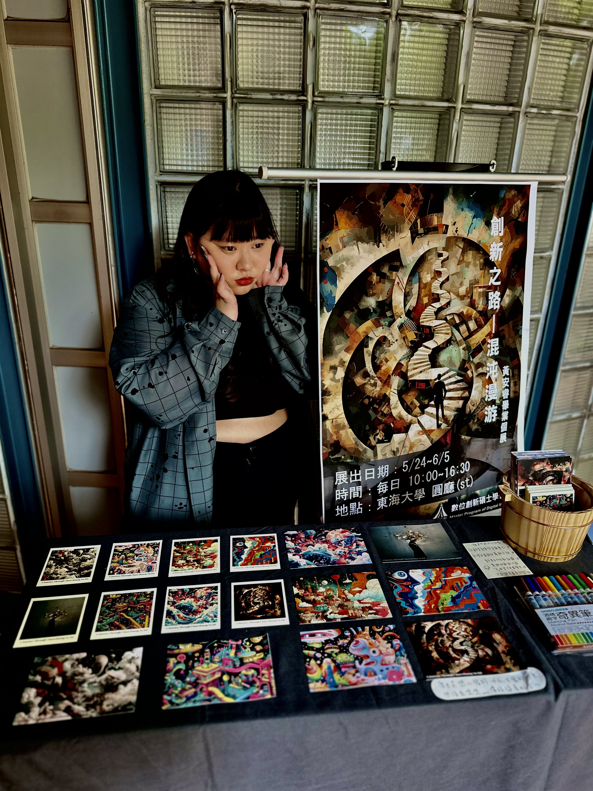
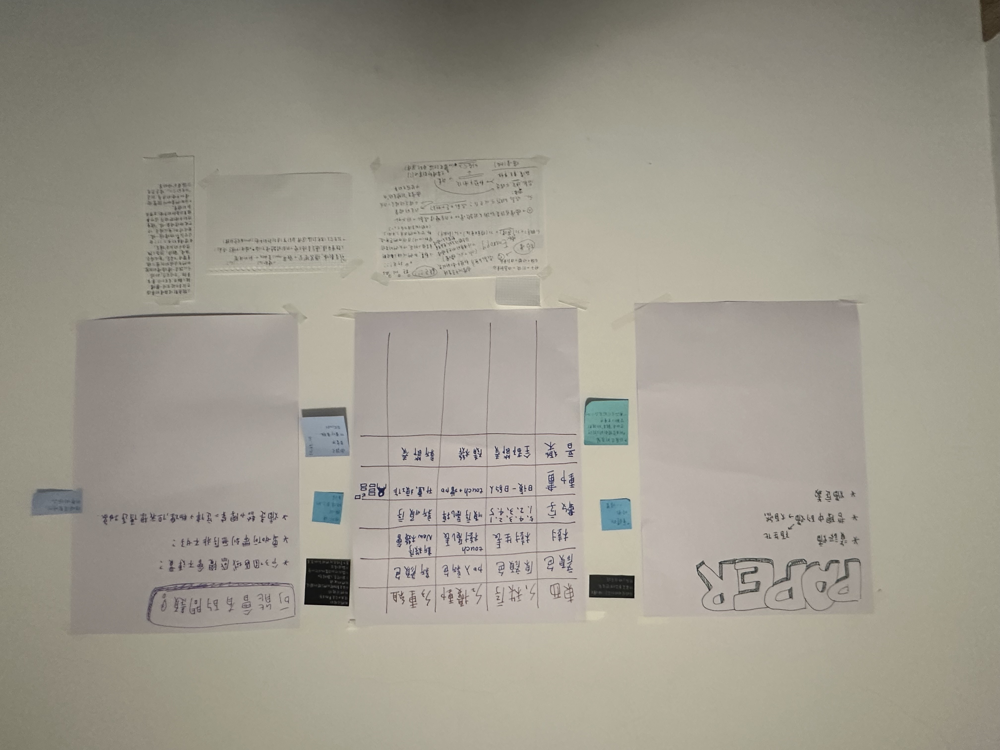
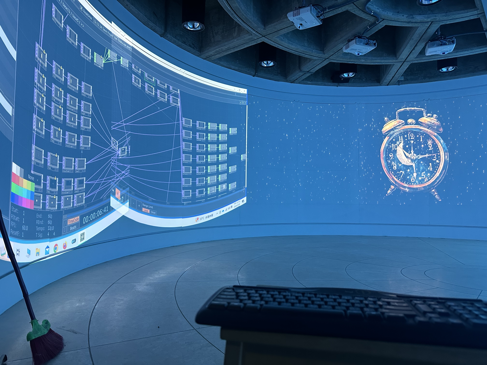

展覽簡介
《混沌漫游》是我的研究所畢業個人展。透過影像與互動的結合，打造出一場可自由穿梭於秩序與混沌之間的數位旅程。觀眾可以透過與場景的互動，體驗日常與失序的交錯節奏。
為什麼想做《混沌漫游》？
對我來說，這場展覽或許是想完成某種人生清單吧──辦一場展覽、為自己的創作做一次公開的總結，也算是一個轉捩點。
《混沌漫游》的出發點，其實來自我對生活中「失序感」的長期觀察與思考。在這個快速變動的時代，我們經常被突如其來的事件打亂節奏：親人離去、工作失衡、或是長時間無法紓解的壓力。 這些看似混亂的經歷，乍看像是崩潰的開端，但我開始想——它們，會不會其實也是創新的起點？
「也許，正是在混沌中，新的秩序正在誕生。」
受到「熵」這個物理概念的啟發，我開始重新理解「秩序與混亂」之間的關係。 因此，我嘗試以沉浸式互動展覽的形式，將這個抽象的思考具象化。透過生成式 AI 視覺與環形場域的構成，讓觀眾以感官為引，進入一段關於崩解與重構的旅程。
展覽內容發想
光是思考「到底要做什麼？」這件事，就花了我非常多時間。 指導教授曾經對我說：「你就一直看別人的作品，沒事就多看...看著看著，你就會突然想到你想做什麼了。」 當時我完全不相信，結果——真的是這樣！
創作初期的手稿與發想過程
回頭來看，其實那些靈感是慢慢累積起來的。透過大量觀看，我像是在一層層撥開迷霧，慢慢確定自己真正想表達的東西。 在理論建構上，我不僅回顧了熵的科學定義，也參考資訊論與藝術中的應用轉化。最後，我發展出「雙日循環」的概念設計：第一天象徵秩序，第二天則進入變化與失序的感受。
技術與規劃
在技術實作方面，我選擇以 TouchDesigner 作為整體互動系統的開發工具。 為了製作符合主題氛圍的影像素材，我搭配使用生成式 AI 工具 Midjourney，根據不同互動情境的需求設計 prompt，再由 ChatGPT 協助進行文字生成與調整。
整個互動設計可分為三個主要區塊：
- 身體互動區：利用 Kinect 深度攝影機擷取觀眾骨架與臉部，讓系統根據肢體動作產生即時互動。
- 聲音互動區：麥克風模組偵測聲音強度與頻率，觸發視覺特效。
- 自動轉場邏輯：將感測資料匯入資料流，控制場景的自動切換。
挑戰與解法
最大的挑戰之一，是如何將「熵」與「失序」這種抽象的概念，轉化為一般觀眾也能感受的體驗。 我不希望透過大量文字解說來硬塞知識，而是希望觀眾能「感受到」。 因此，我規劃了雙日循環：第一天的場景象徵秩序，所有動作都有可預期的結果；第二天則進入失序狀態，互動結果變得難以掌控。

此外，環形場域的建置也是一大難題。展場中共設置了 8 台投影機，需要手動進行畫面 mapping 與邊緣融合（edge blending）。 這些投影機必須像無縫拼接般連成一圈，稍有誤差就會破壞沉浸感。這是第一次從內容規劃、技術整合到空間營造，全由我一手包辦的展覽。
回饋與收穫
展覽結束後的問卷回饋顯示，大多數觀眾表示：「互動形式提升了參與感」、「場域氛圍成功讓人進入不同狀態」。 有些觀眾特別提到，展覽的節奏安排讓他們彷彿經歷了一段情緒上的轉化旅程，感覺像是在跟自己的內在對話。

這場展覽讓我實際經歷了從概念發展到觀眾溝通的完整流程。 最令我開心的是，這不只是一張比賽的佈景，而是真正被球館留下、被觀眾記住的畫面。 透過這次的大型作品，我也更認識了自己。

{kind=link}
{kind=link}
{kind=link}
{kind=link}
{kind=link}